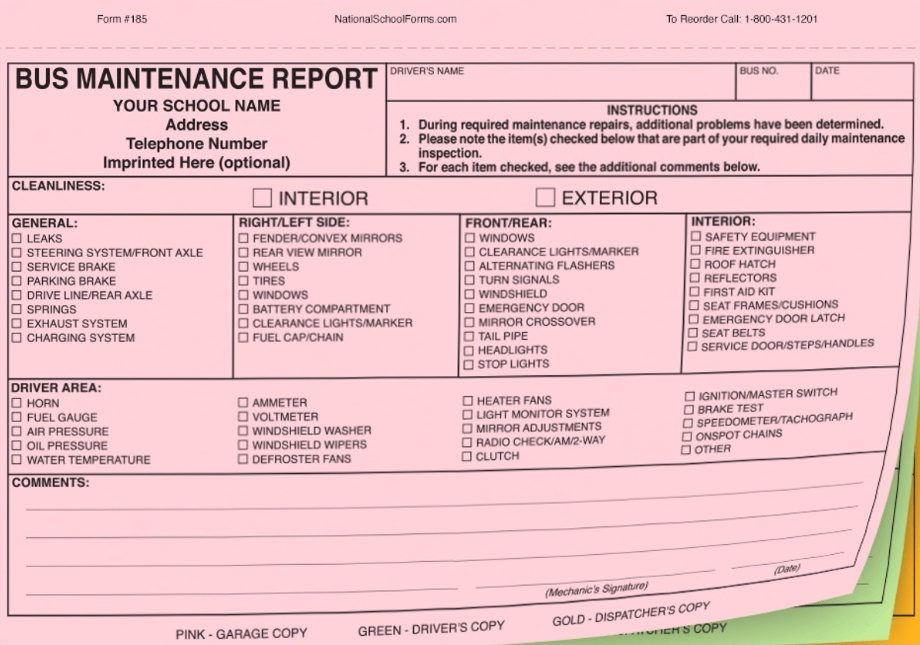
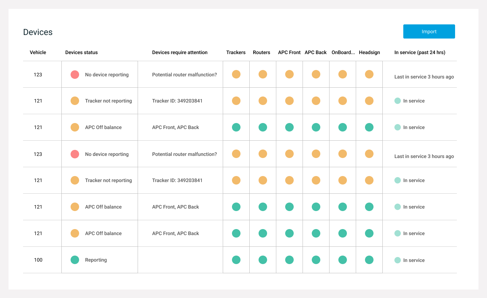
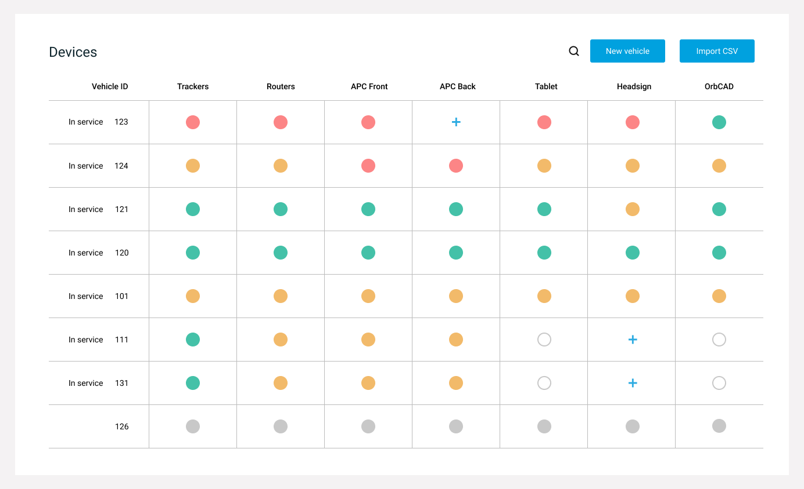
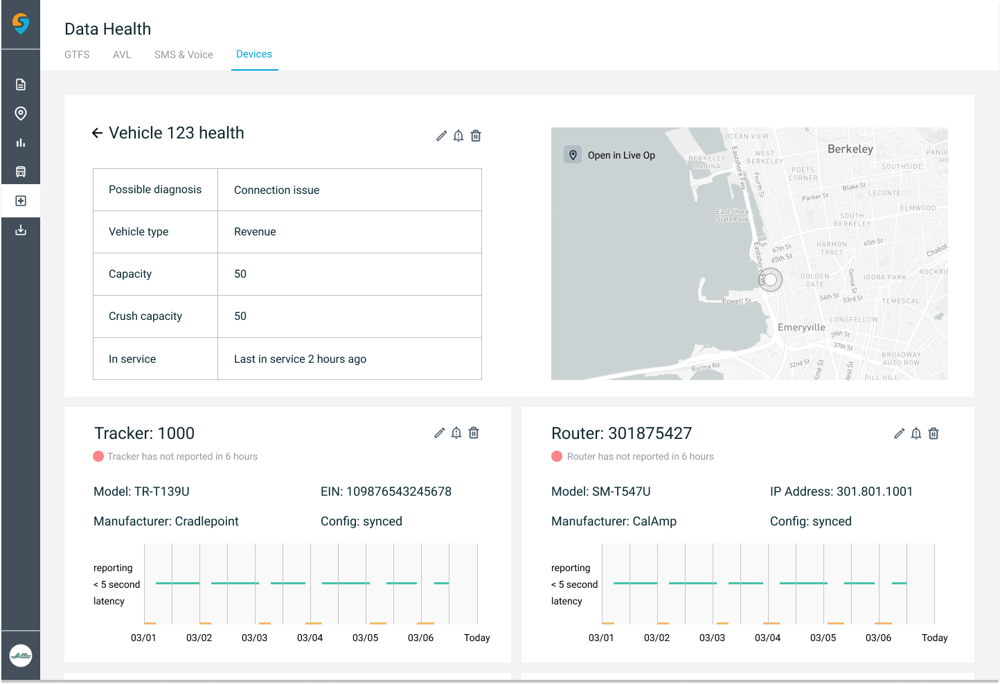
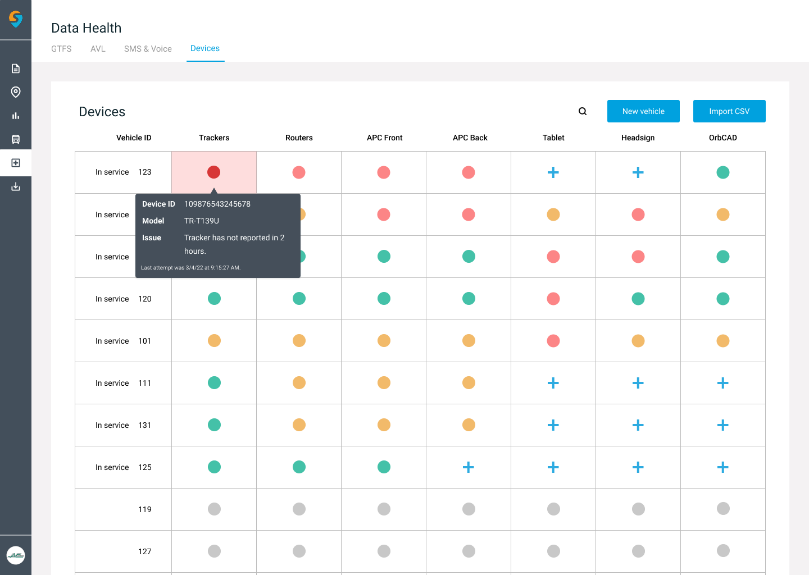

Swiftly · Device monitoring · 2022
Transit IT couldn’t see which of their bus devices were failing. I designed Swiftly’s first live view of every device on every vehicle.
Swiftly is a transit-data platform for U.S. and European transit agencies. After the live view shipped, a device investigation fell from 30+ hours to 12–24, and device-issue inbound to Client Success dropped 20%.
- Role
- Product designerResearch + design, end to end · Data Monitor Team
- Team
- Cross-functional team of 5PM, TPM, eng manager, engineer + me
- Timeline
- May–June 2022Shipped as a 0-to-1 MVP
- Used by
- Transit-agency IT teamsAgencies like CapMetro, Austin’s transit authority
The failure signal was a form filled out by hand, when agencies had one at all.
Every bus carries eight or more devices that must stay alive. When one failed, IT’s only signal was a paper form and scattered monitoring platforms.
Many small and medium agencies had no formal report at all; failures traveled by word of mouth. Almost 40% of Client Success’s time went to device questions, and one investigation took 30+ hours.
“As an IT at CapMetro, I want to feel confident that I know which in-service vehicle devices require my attention so that we can troubleshoot quickly without interrupting services and have better data for future prediction (e.g. arrival time).” User story, from research with CapMetro IT
Bus operator fills out a paper maintenance form
Report may or may not reach agency IT
IT routes the question to Swiftly Client Success
30+ hrs to investigate one device issue
Existing experience

The daily report

I stopped trying to improve the report.
Before sketching, I mapped a full agency day, bus operator to dispatcher to Client Success. Two findings reframed the brief:
The reframe
- There was often no report to improve. Many small and medium agencies had none. A better daily report would miss them entirely.
- The data could say that a device failed, not why. The back end had too little diagnostic depth to promise automated diagnosis.
So instead of a better report, I scoped a live, triage-first view: one that shows which vehicles need attention now and claims nothing the data cannot back up.
If IT can see device status in one place, they will investigate with confidence instead of routing the work through Client Success.
System thinking

Four decisions I shipped.
Replace the report
One live view replaced the form and the scattered platforms: every device on every vehicle, in one place.
Lead with triage
In-service status leads: it is the one thing IT scans for, and readers read the left edge first.
Choose color over icons
I chose a labeled color legend over icons because it is legible on first use, with no icon vocabulary to learn.
Hover to monitor, click to investigate
Glancing stays the default; opening a device for detail is a choice rather than a forced navigation.
Considered: all vehicles

Shipped: in-service first

Try it · The shipped interaction
Hover a dot for status. Click for the device panel.
| Vehicle | Trackers | Routers | APC Front | APC Back | Tablet | Headsign | OrbCAD |
|---|
Vehicle
- Possible diagnosis
- Device ID
- Last report
Reporting latency · last 14 checks
Demo data · recreated interaction
Shipped: click to investigate

Investigation time fell. The internal goal was not met.
Investigation time
12–24 hrs
Per device issue, down from 30+ hours before the dashboard.
Support inbound
−20%
Device-issue inbound to Client Success, the customer-facing team that had spent almost 40% of its time on device questions.
Internal goal
Not met
The target was under 12 hours per investigation.
The miss was the most useful learning: IT teams triage differently by agency, so one investigation-time target measured the wrong thing.
Two results the numbers miss: monitoring now worked for agencies that never had a formal report, and the team credited it with shifting Swiftly’s culture from engineering-led to design-led.
Shipped: live monitoring

One investigation-time target for every agency hid real variation between them.
The hover/click split and the labeled legend are what made the table glanceable in practice.
A better report would have missed every agency that never had one. Mapping the full agency day is what surfaced them.
The question I would open a v2 with: what does “fast enough” mean at each agency? The dashboard could learn a per-agency triage target instead of one clock.